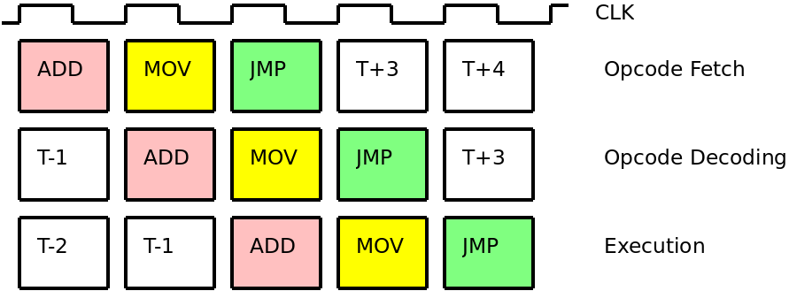
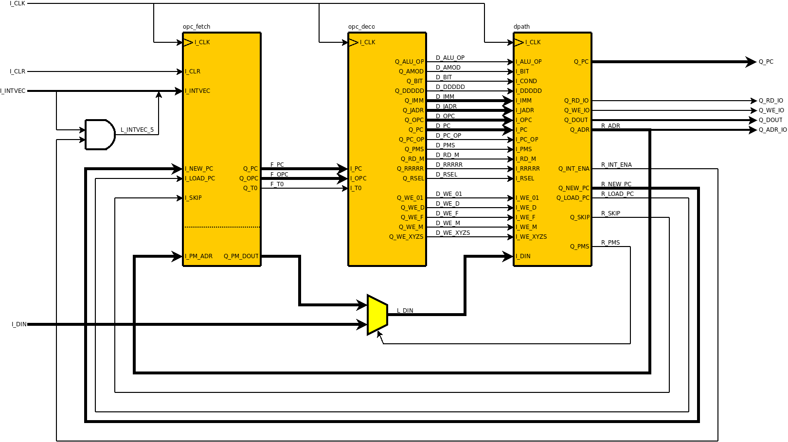

| Previous Lesson | Table of Content | Next Lesson |
|---|
In this lesson we will discuss the core of the CPU. These days, the same kind of CPU can come in different flavors that differ in the clock frequency that that support, bus sizes, the size of internal caches and memories and the capabilities of the I/O ports they provide. We call the common part of these different CPUs the CPU core. The CPU core is primarily characterized by the instruction set that it provides. One could also say that the CPU core is the implementation of a given instruction set.
The details of the instruction set will only be visible at the next lower level of the design. At the current level different CPUs (with different instruction sets) will still look the same because they all use the same structure. Only some control signals will be different for different CPUs.
We will use the so-called Harvard architecture because it fits better to FPGAs with internal memory modules. Harvard architecture means that the program memory and the data memory of the CPU are different. This gives us more flexibility and some instructions (for example CALL, which involves storing the current program counter in memory while changing the program counter and fetching the next instruction) can be executed in parallel).
Different CPU cores differ in the in the instruction set that they support. The types of CPU instructions (like arithmetic instructions, move instructions, branch instructions, etc.) are essentially the same for all CPUs. The differences are in the details like the encoding of the instructions, operand sizes, number of registers addressable, and the like).
Since all CPUs are rather similar apart from details, within the same base architecture (Harvard vs. von Neumann), the same structure can be used even for different instruction sets. This is because the same cycle is repeated again and again for the different instructions of a program. This cycle consists of 3 phases:
Opcode fetch means that for a given value of the program counter PC, the instruction (opcode) stored at location PC is read from the program memory and that the PC is advanced to the next instruction.
Opcode decoding computes a number of control signals that will be needed in the execution phase.
Execution then executes the opcode which means that a small number of registers or memory locations is read and/or written.
In theory these 3 phases could be implemented in a combinational way (a static program memory, an opcode decoder at the output of the program memory and an execution module at the output of the opcode decoder). We will see later, however, that each phase has a considerable complexity and we therefore use a 3 stage pipeline instead.
In the following figure we see how a sequence of three opcodes ADD, MOV, and JMP is executed in the pipeline.

From the discussion above we can already predict the big picture of the CPU core. It consists of a pipeline with 3 stages opcode fetch, opcode decoder, and execution (which is called data path in the design because the operations required by the execution more or less imply the structure of the data paths in the execution stage:

The pipeline consists of the opc_fetch stage that drives PC, OPC, and T0 signals to the opcode decoder stage. The opc_deco stage decodes the OPC signal and generates a number of control signals towards the execution stage, The execution stage then executes the decoded instruction.
The control signals towards the execution stage can be divided into 3 groups:
We come to the VHDL code for the CPU core. The entity declaration must match the instantiation in the top-level design. Therefore:
33 entity cpu_core is 34 port ( I_CLK : in std_logic; 35 I_CLR : in std_logic; 36 I_INTVEC : in std_logic_vector( 5 downto 0); 37 I_DIN : in std_logic_vector( 7 downto 0); 38 39 Q_OPC : out std_logic_vector(15 downto 0); 40 Q_PC : out std_logic_vector(15 downto 0); 41 Q_DOUT : out std_logic_vector( 7 downto 0); 42 Q_ADR_IO : out std_logic_vector( 7 downto 0); 43 Q_RD_IO : out std_logic; 44 Q_WE_IO : out std_logic);src/cpu_core.vhd
The declaration and instantiation of opc_fetch, opc_deco, and dpath simply reflects what is shown in the previous figure.
The multiplexer driving DIN selects between data from the I/O input and data from the program memory. This is controlled by signal PMS (program memory select):
240 L_DIN <= F_PM_DOUT when (D_PMS = '1') else I_DIN(7 downto 0);src/cpu_core.vhd
The interrupt vector input INTVEC is and'ed with the global interrupt enable bit in the status register (which is contained in the data path):
241 L_INTVEC_5 <= I_INTVEC(5) and R_INT_ENA;src/cpu_core.vhd
This concludes the discussion of the CPU core and we will proceed with the different stages of the pipeline. Rather than following the natural order (opcode fetch, opcode decoder, execution), however, we will describe the opcode decoder last. The reason is that the opcode decoder is a consequence of the design of the execution stage. Once the execution stage is understood, the opcode decoder will become obvious (though still complex).
| Previous Lesson | Table of Content | Next Lesson |
|---|